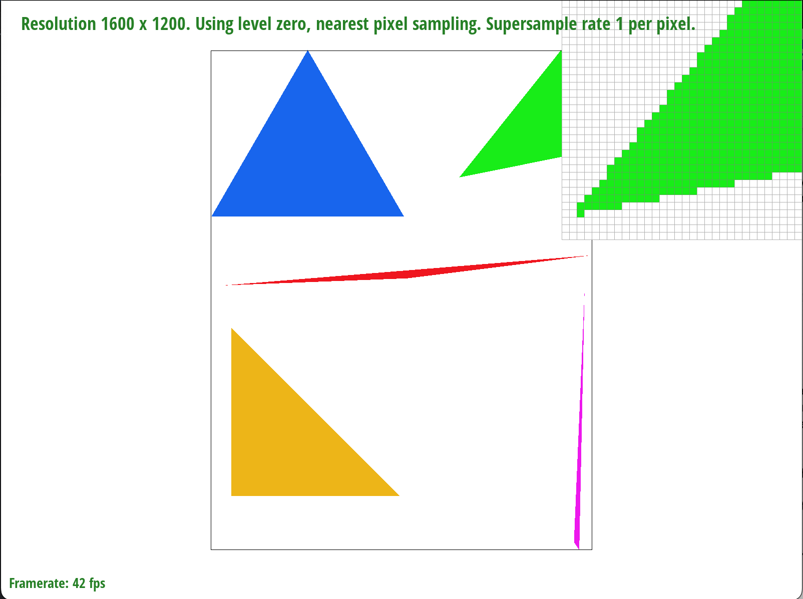

Overview
In this project we applied what we learned in class about rasterizing images using triangles and improving the quality and processing speed of those images through techniques like antialiasing with super sampling, linear interpolation of color and texture, and mipmaps. With these methods we were able to rasterize a wide range of 2D images, mapping warped-looking textures onto our pixel space and taking advantage of a GUI to compare and contrast the performance and visual deltas of using different sampling/interpolation methods. Some of the really interesting things to implement included creating a dynamic 1-dimensional sample buffer and resolving it to the 2-D frame buffer, as well as trilinear interpolation. In addition, it was nice to see how the GUI was coded and take a look through the source code to see how they handled the actual rendering and user interaction events! Stepping through each of these examples piece by piece really helped us develop an understanding and appreciation of how difficult it would be to rasterize all these triangles while balancing performance and image quality during live runtime, like in a video game.
Section I: Rasterization
Part 1: Rasterizing single-color triangles
Q: Walk through how you rasterize triangles in your own words.To rasterize triangles, we first find the maximum and minimum x and y values and iterate over them. In each iteration, we calculate the middle of the pixel by flooring the (x,y) coordinate and adding an interval of 0.5. Once we have the locations of the middles of each pixel (represented by midx and midy), we determine whether the point is within the triangle by evaluating the line equation with respect to each edge of the triangle – if the equation returns a non-negative number, we can say that the point lies on or within the edge. If the point lies within all three edges (or lies outside of all three), we can say that the point is within the triangle and can color that point.
Our algorithm is no worse than one that checks each sample within the bounding box of the triangle since we iterate across the bounding box of the triangle, and calculate 3 line equations at each iteration, with a runtime of O(n^2). This is still better than checking every box in the frame buffer.
Below we show a screenshot of basic/test4.svg with default viewing params, with a magnifying focus on triangle vertices, where our triangles develop some jaggies.
Part 2: Antialiasing triangles
Q: Walk through your supersampling algorithm and data structures. Why is supersampling useful? What modifications did you make to the rasterization pipeline in the process? Explain how you used supersampling to antialias your triangles.To supersample, we made use of the class property sample_rate, which we called variable s in our code, and increased the size of the sample buffer to [width*height*sample_rate]. This allows the 1-D buffer to have space for all the sub-pixel samples. The buffer will now store the colors for each of the s-number of supersampled points before moving on to the next pixel in the framebuffer or screen space. To resolve these sample buffer points, we iterate through each set of s-number of supersampled points and average their colors. We stored the x and y value that was associated with the supersampled points and threw the average color into the frame buffer at that location. This was useful because it removed a lot of jagged edges and improved the resolution of our images! It was clear that without supersampling, sometimes the sampling would miss details like very thin lines. With super sampling, we were able to antialias the edges of our triangles a lot, smoothing out the perceived edges and helping to capture more detail like the fine points of the triangles and small sections of the thinner shapes.
Below we show a side-by-side comparison of antialiasing the triangle from part 1 with supersampling at rates of 1, 4, and 16 samples per pixel.
We see an improvement of the edge definition for the triangle vertex. Originally, the values are either binarily green or white, but when we start averaging and making use of the supersampled pixels, then we can use varying values between pure green and pure white, which helps smooth out the edge and increase the perceived clarity of the image.Part 3: Transforms
Below we show a plot of svg/transforms/robot.svg where we have used transforms and shape rasterization to create an image of cube man doing a squat with his arm above his head, and changed his coloring to give him some clothes and a realistic skin tone.
Section II: Sampling
Part 4: Barycentric coordinates
Q: Explain barycentric coordinates in your own words and use an image to aid you in your explanation.In the image below, we have plotted a single triangle with one red, one green, and one blue vertex. The gradient of colors are more red towards one vertex, more green towards the other, and more blue towards the last vertex. The color of any given point is a weighted sum of how close it is to each of the three vertices. This is how barycentric coordinates work, and they allow us to easily represent the space within a triangle as a weighted combination of the vertex locations of the triangle. Weights of alpha, beta, and gamma are calculated using linear interpolations of the distance between a vertex and the opposing edge. Alternatively, they can be thought of as a set of variables that relate the proportional areas of the triangle constructed by lines from each vertex to the point (x,y)
Below is a screenshot of svg/basic/test7.svg with default viewing parameters and sample rate 1.
Part 5: "Pixel sampling" for texture mapping
Q: Explain pixel sampling in your own words and describe how you implemented it to perform texture mapping. Briefly discuss the two different pixel sampling methods, nearest and bilinear.Pixel sampling is a way to take samples of texture values from the 2D texture space and transform them into the sample buffer, where they can be further processed using supersampling or interpolation methods. We implemented texture mapping by first constructing the given x and y values into a 3x3 matrix representing the [x,y,w] values of each triangle vertex in the screen space, as well as an equivalent matrix for the triangle coordinates in the [u,v,w] texture space. Given these two matrices, there is a transformation matrix M that takes us from the u-v basis to the x-y basis, calculated by M = U*X^-1. After calculating this M, we can take coordinates in x-y and find their corresponding texture location in the u-v basis. From here, we can decide what to return as the texture value for the given x-y coordinates. We can either simply return color stored at the nearest texture pixel (texel) as the texture value for the x-y coordinates - which is referred to as nearest-pixel sampling - or we can linearly interpolate the color value from the surrounding 4 texels. This second method includes two linear interpolations, one in the u direction and one in the v direction, and as a result is called bilinear interpolation. Bilinear interpolation sampling allows us to obtain smoothly varying values of textures to bring back into the x-y space.
Below we show an example of where bilinear sampling clearly defeats nearest sampling. We compare four screenshots, varying between nearest sampling and bilinear sampling, in conjunction with supersampling at 1 and 16 samples per pixel.
|
|
|
|
|
|
Notes on relative differences: Nearest sampling seems to retain brighter colors around the small letters “BE”, but also has a lot of jagged edges. At supersampling size of 1, many fine details of the shape of the letters are lost. At size 16, it really improves the outline of the letters and captures more detail, but one notable spot is that near the middle of the “E”, things just start to blur into a whitish color. Bilinear Interpolation at size of 1 is already better than nearest sampling at the same supersampling size. There is good antialiasing of the jagged edges of the letters. At size 16, it improves the details greatly. It may seem that at this level of supersampling, nearest sampling and bilinear interpolation are of similar quality, but subtle differences such as that spot in the middle of the “E” stand out, where bilinear interpolation adds back in a little bit more of the blue of the background to show that it’s capturing more of the detail of the letter outline.
There will be a difference in the two methods when there are small details or high contrast on edges. Jagged edges and small features will be better captured by bilinear interpolation, which would capture detail from surrounding pixels instead of just the raw value of the nearest pixel.
Part 6: "Level sampling" with mipmaps for texture mapping
Level sampling is the technique of taking a texture file and downsampling it to different signal frequencies. Then, for each sample, we use the texture file with the resolution that matches the screen sampling rate. In order to implement level sampling, we had to determine the correct mipmap level to use at point. This is how we do this:
- First find three points in (x,y) space: (x,y), (x + 1, y), (x, y + 1) and translate them into (u,v) texture space: uv, dx_uv, and dy_uv respectively.
- Since we know that these points are a unit distance away from (x,y), calculate the corresponding distance between the three points in texture space. You should get two lines: one from uv to dx_uv and one from uv to dy_uv.
- Then find the longer line, L, and calculate the mipmap level by taking the log of L in base 2 to get D, the mipmap level.
As the number of samples per pixel increases in supersampling, the amount of memory used increases, and the speed decreases. However, this speed decrease allows us to use antialiasing to achieve higher quality images. There are two pixel sampling techniques – nearest pixel sampling and bilinear pixel interpolation sampling. Nearest pixel is less costly than bilinear interpolation, and is faster. However, there is more aliasing when using the nearest pixel. There are three level sampling techniques used in the project: level zero, nearest level, and bilinear level interpolation. The first, level zero, is the least costly and the fastest. Nearest level utilizes the mipmap levels, and reduces aliasing by using lower resolution textures for points that are rendered farther away. Bilinear level interpolation further improves upon this, by allowing for continuous levels (rather than integer levels), smoothing out points between levels and further reducing aliasing. Both bilinear level interpolation and nearest level use the same amount of memory (same number of mipmaps stored), but bilinear level interpolation is slightly slower (have to get the texel twice and perform an additional lerp).
|
|
|
|
|

|
|
|
|
Section III: Art Competition
We didn't participate in the art competition